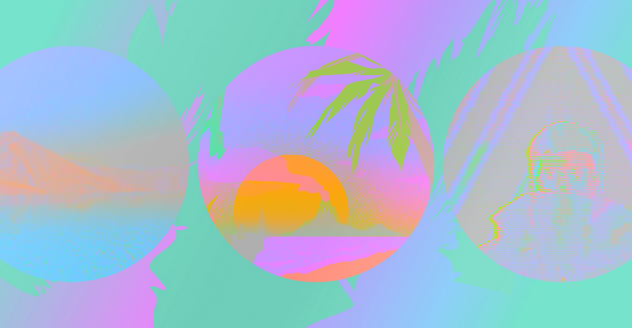

Site Overview

Beautiful documentation
Material is a theme for Hugo, a fast and flexible static site generator. It is built using Google’s material design guidelines, fully responsive, optimized for touch and pointer devices as well as all sorts of screen sizes.
Material is very lightweight – it is built from scratch using Javascript and CSS that weighs less than 30kb (minified, gzipped and excluding Google Fonts and Analytics). Yet, it is highly customizable and degrades gracefully in older browsers.
Quick start
Install with git:
git clone git@github.com:digitalcraftsman/hugo-material-docs.git themes/hugo-material-docs
Features
- Beautiful, readable and very user-friendly design based on Google’s material design guidelines, packed in a full responsive template with a well-defined
Acknowledgements
Last but not least a big thank you to Martin Donath. He created the original Material theme for Hugo’s companion MkDocs. This port wouldn’t be possible without him.
Furthermore, thanks to Steve Francia for creating Hugo and the awesome community around the project.